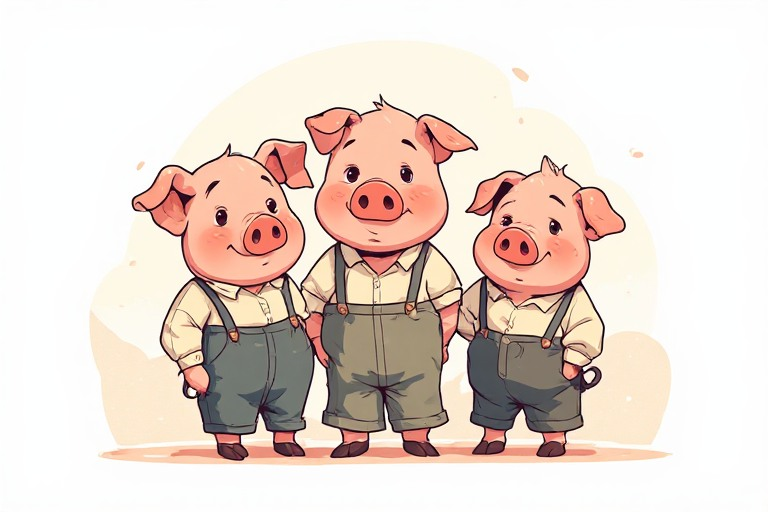
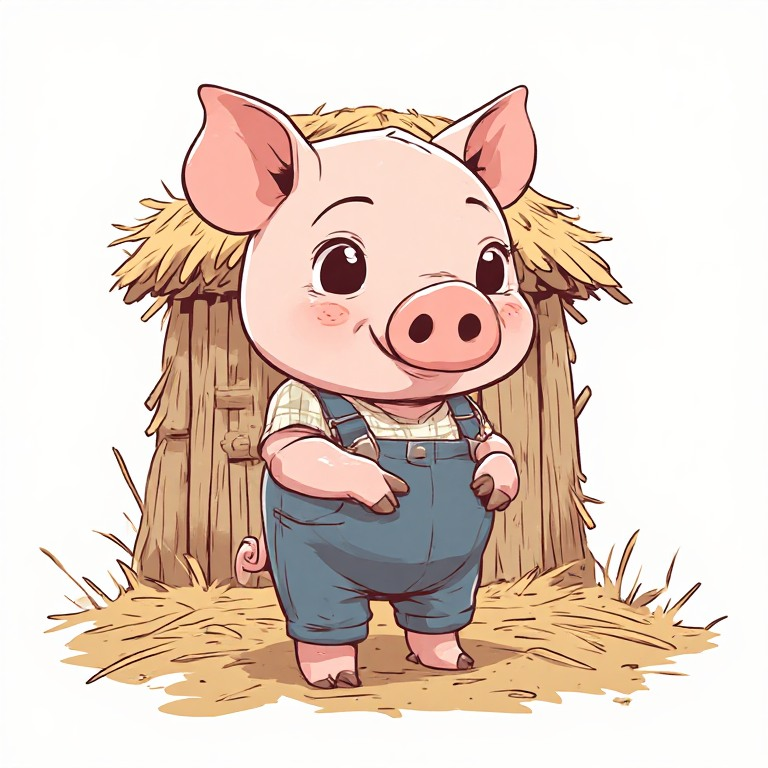
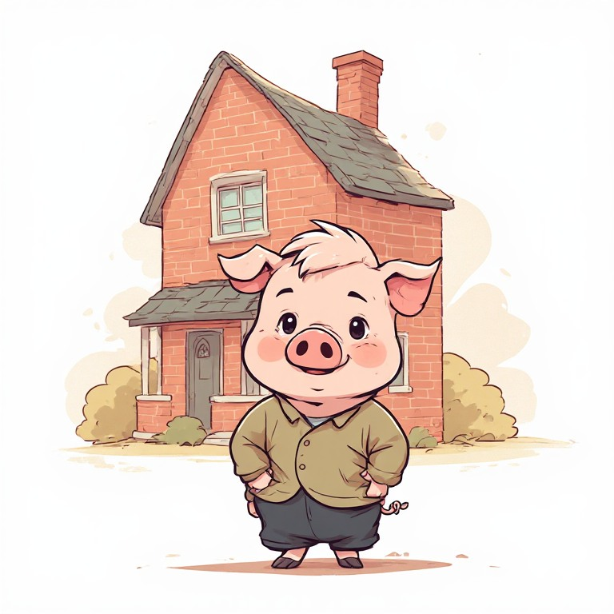
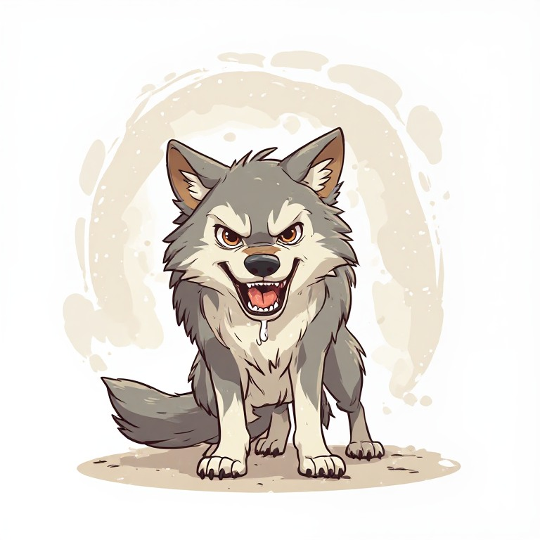
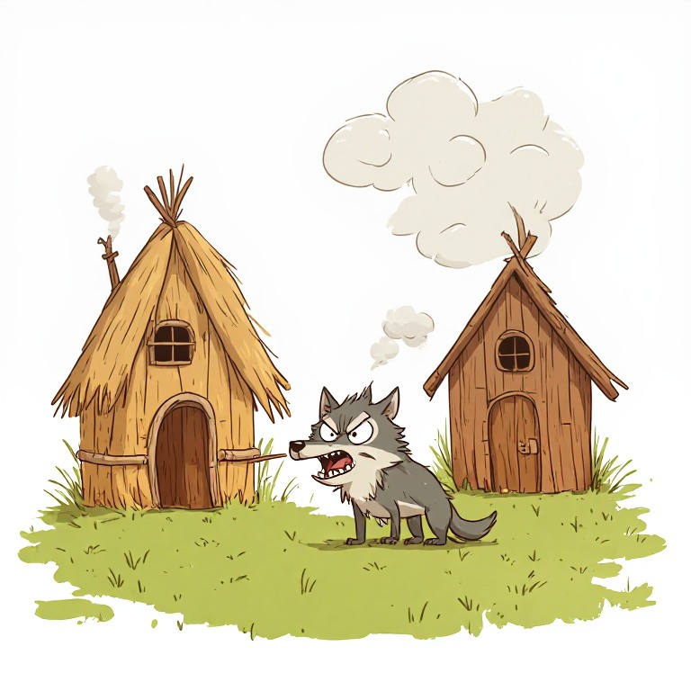
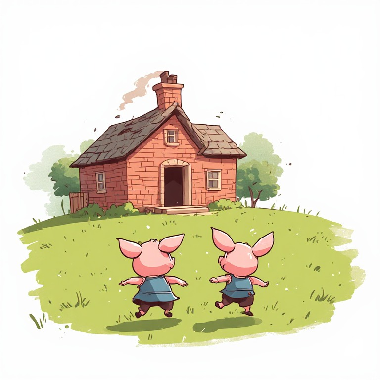
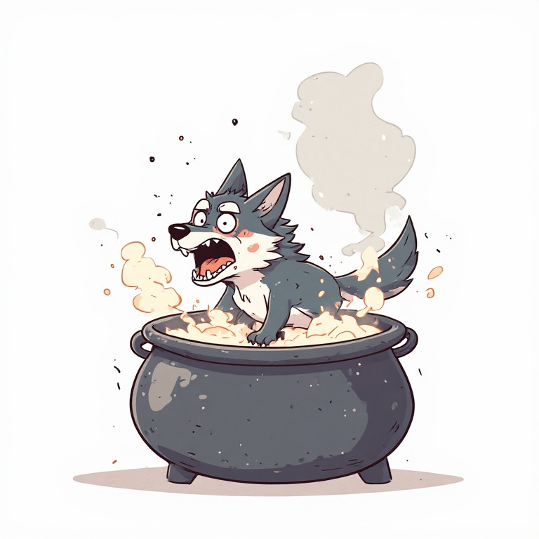
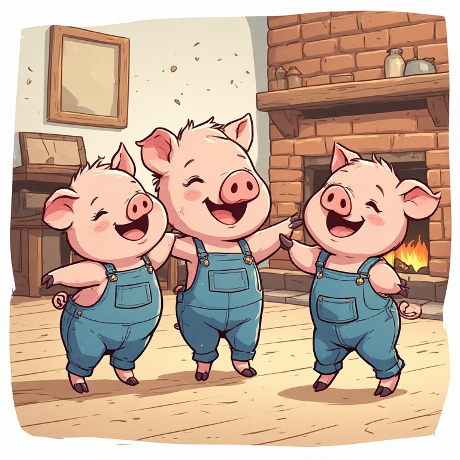

Los tres hermanos
Érase una vez tres cerditos hermanos que vivían con su mamá en una casita al borde del bosque. Un buen día, la mamá los llamó al salón y les dijo:
—Hijos míos, ya sois mayores. Ha llegado el momento de que construyáis vuestras propias casas y comencéis vuestra vida. Sed trabajadores y tened cuidado con el lobo feroz.
Los tres cerditos se abrazaron, recogieron sus cosas y salieron al mundo.

La casa de paja
El primer cerdito, que era el más perezoso, vio un montón de paja junto al camino y pensó: "¡Perfecto! Con esto tengo más que suficiente." En un par de horas, su casita ya estaba lista. Su hermano del medio pasó por allí y le dijo:
—¿Ya has terminado? Esa casa no parece muy sólida...
—¡Qué va! Es perfecta —respondió el primero, bostezando—. Ahora voy a echarme una siesta.

La casa de madera
El segundo cerdito eligió madera para construir la suya. Tardó más que su hermano, pero cuando el tercero pasó a verle, tampoco quedó muy convencido.
—Deberías usar ladrillos —le dijo—. La madera no es suficiente si viene el lobo.
—Exageras —respondió el segundo, dándole una palmada en la espalda—. ¡Venga, que ya está oscureciendo!

La casa de ladrillos
El tercer cerdito, el más serio y trabajador de los tres, buscó piedra y ladrillo. Trabajó durante varios días, sin prisa y sin descanso, hasta que levantó una casa fuerte y bien construida. Cuando por fin terminó, se limpió las manos y suspiró satisfecho:
—Esta sí que aguanta lo que venga.

Llega el lobo
Y no tardó mucho en comprobarlo. Una noche apareció el lobo feroz, hambriento y con muy malas intenciones. Fue directo a la casita de paja y llamó a la puerta con un golpe seco.
—¡Cerdito, cerdito, ábreme la puerta!
—¡No, no y no! —gritó el cerdito desde dentro—. ¡Por los pelos de mi barbilla que no te abriré!
—Entonces soplaré, y soplaré, ¡y tu casa derribaré!
El lobo llenó los pulmones de aire y sopló con todas sus fuerzas. La casita de paja salió volando en un instante. El cerdito pegó un chillido y echó a correr hacia casa de su hermano.

El lobo arrasa con todo
—¡Hermano, hermano, ábreme! ¡El lobo viene detrás de mí!
La puerta se abrió de golpe y los dos se encerraron dentro. Pero el lobo llegó enseguida y volvió a llamar:
—¡Cerditos, cerditos, abridme la puerta!
—¡No, no y no! —contestaron los dos a coro—. ¡Por los pelos de nuestra barbilla que no te abriremos!
—¡Entonces soplaré, y soplaré, y vuestra casa derribaré!
Y sopló. Y sopló con más fuerza aún. Las tablas de madera crujieron, temblaron y al final cedieron. Los dos cerditos salieron pitando por la puerta de atrás, corriendo tan rápido como sus patitas les llevaban hacia la casa de ladrillo de su hermano.

El último refugio
—¡Abre, abre, que viene el lobo! —gritaron aporreando la puerta.
—¡Adentro, rápido! —dijo el tercero, haciéndoles pasar y cerrando el cerrojo con fuerza.
El lobo llegó resoplando, furioso y humillado. Golpeó la puerta con el puño.
—¡Cerditos, esta vez no se os escapáis! ¡Abridme ahora mismo!
—¡Ni lo sueñes! —respondió el tercer cerdito con calma—. Esta casa no la tiras tú ni soplando toda la noche.
El lobo sopló. Sopló y sopló hasta quedarse sin aliento. Pero la casa de ladrillo no se movió ni un milímetro.

La trampa de la chimenea
Entonces tuvo una idea: treparía por el tejado y entraría por la chimenea. Los cerditos lo oyeron subir y el mayor dijo en voz baja:
—Tranquilos. Yo sé lo que hay que hacer.
Corrió a la cocina, puso una olla grande al fuego y la llenó de agua. Cuando el lobo se dejó caer por la chimenea, se llevó el susto de su vida. Salió de allí aullando, con el trasero bien escaldado, y no paró de correr hasta perderse en lo más profundo del bosque.

Final feliz
Los tres cerditos se miraron, se echaron a reír y se dieron un gran abrazo.
—¡Lo hemos conseguido! —exclamó el pequeño, todavía temblando.
—La próxima vez, ¿me hacéis caso desde el principio? —dijo el mayor, con una sonrisa.
—Sí, sí —respondieron los otros dos a la vez—. ¡Prometido!
Y desde ese día, los tres vivieron juntos en la casa de ladrillo, felices y sin miedo al lobo feroz.
Colorín colorado, este cuento se ha acabado.
